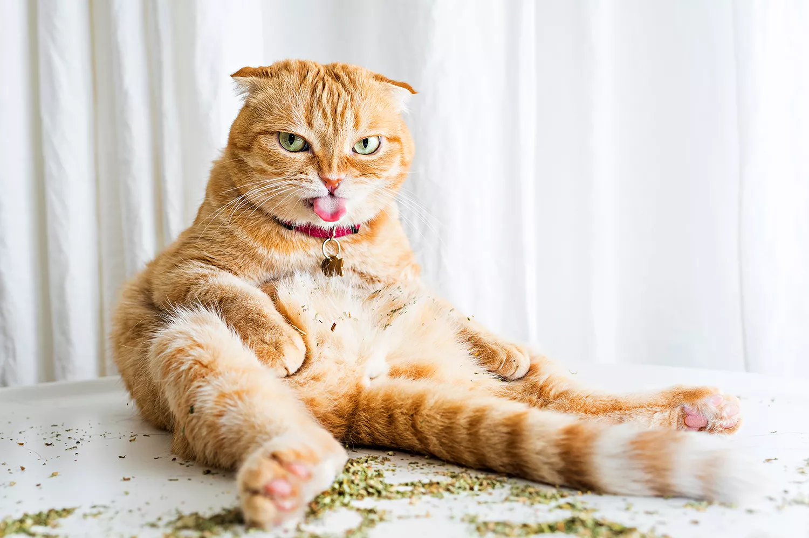
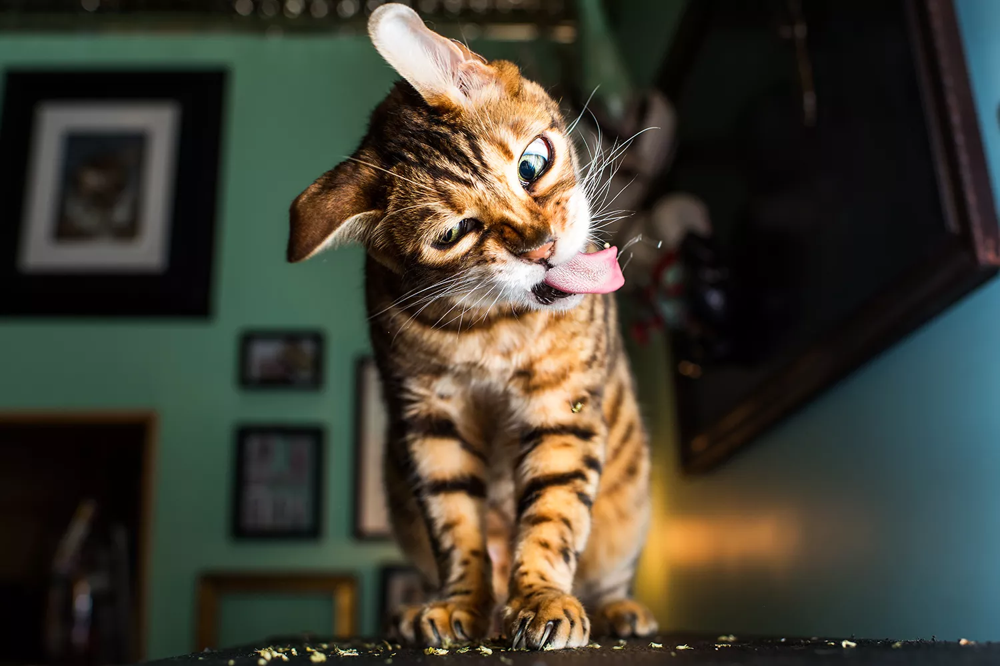
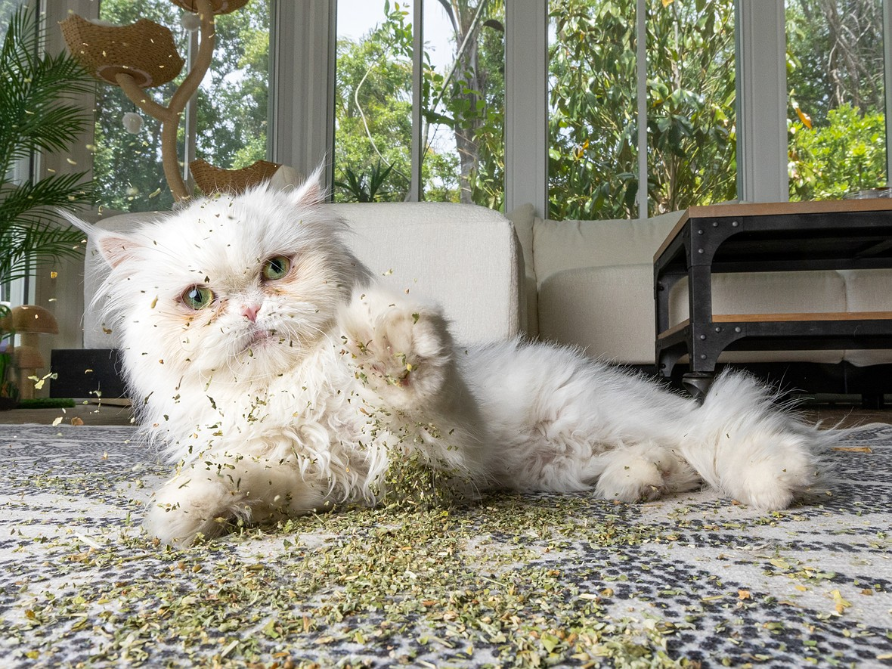
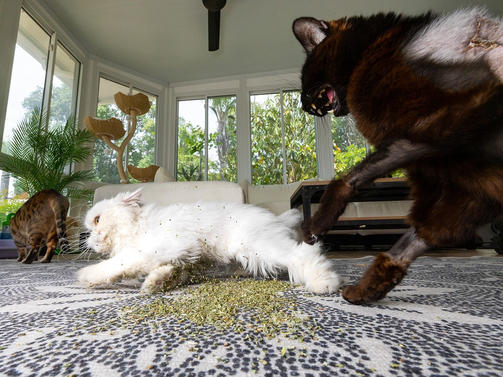

Catnip, also called Nepeta cataria is a member of the mint family and can be used to make tea. In the leaves of this plant is a compound called nepetalactone; this compound is responsible for the reaction cats' have to catnip.
Reactions to catnip depend on the cat. Some cats can become more affectionate, relaxed, or playful while others can become more aggressive. However, not all cats are affected by catnip, which is completely normal.
Catnip is non-toxic, and cats CAN'T overdoes on it. However, too much catnip can cause diarrhea, voimting, dizziness, and other health problems.
Photos by Andrew Marttila
   Have too much catnip and no cats? Just want a cat in general? Click the link below to an adoption website for cats in DC
Adopt a Cat